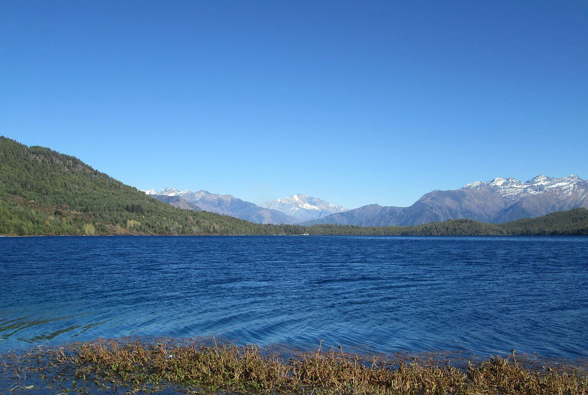
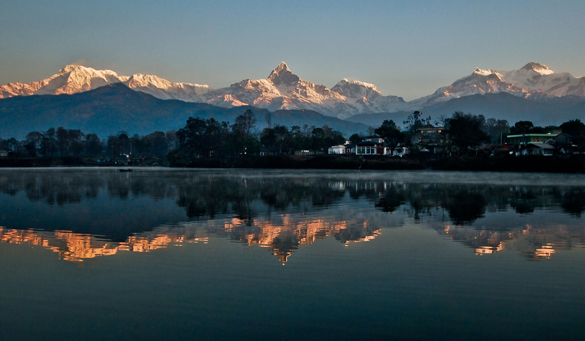

Top 5 Beautiful Lakes Of Nepal.
1.Rara Lake
Rara lake is largest and deepest lake in Nepal which is located in Mugu district.It lies at an altitude
of 2990meters above sea level
covering an area of 10.8km2.Located in Jumla and Mugu districts,
it drains into the Mugu Karnali River via the Nijar River. The water of Rara is
characterized by high
PH and the fresh water is expanded about 5 kilometers in
length and 3 kilometers in width. Situated
in high altitude, surrounded by Rara National Park with pine, spruce, and juniper forest , it was declared
a
Ramsar site in 2007. It
is also known as Mahendra lake.

Rara Lake lies at an elevation of 2,990 m (9,810 ft), has a water surface of 10.8 km2 (4.2 sq mi), a maximum depth of
167 m (548 ft), is
5.1 km (3.2 mi) long
and 2.7 km (1.7 mi) wide. It drains into the Mugu Karnali River via the
Nijar River.[7] Its water quality is characterized by high pH, conductivity and total
hardness.
It has been classified as oligotrophic as it is slightly polluted.[8] The lake changes its colour
up to 5 times a day depending on the climate.Rara
Lake is surrounded by thickly
forested hills named Chuchemara Danda at 4,087 meters and Murma at 3630m. Behind the hills,
the beautiful view of Saipal
Mounatin of Himalayan Range can be seen from the lake. One
revolution of the lake by foot takes almost five hours.[6] During, summer season, birds as far
as Siberia can be found migrating to this area.
2.Fewa lake(phewa lake)
Fewa lake is called fewa taal in Nepal. It is one of the best and beautiful tourist destination.
It is located in Pokhara district.It takes few minutes to reach
there by using plane from kathmandu.
Phewa lake has gained its significance from various perspectives in Pokhara. It is socially,
economically, culturally
as well as a ritually important place. Phewa lake is one of the most
precious treasures for the burgeoning of tourism in Pokhara. Phewa lake is the centre
of
captivation for tourists and it is the major tourist hub in Nepal. It’s an immensely beautiful
and enchanting place, renowned for venturesome and
entertaining activities. The major attraction
of Phewa lake is boating. Boating in the crystal clear water with bare hands makes a more
delightful moment.

3.Shey phoksundo lake
Phoksundo Lake in Karnali Province is the deepest lake of Nepal, having a depth of 136 m.
Phoksundo Lake is an alpine fresh water oligotrophic lake in
Nepal's Shey Phoksundo National
Park, located at an elevation of 3,611.5 m in the Dolpa District. Phoksundo Lake is 494 ha
in size with a water volume
of 409,000,000 m³ and a discharge of 3.715 m³/s. he lake is one of
the popular lakes in Nepal for high altitude and pristine trekking.
Apart from the beautiful views of the Himalayas, Shey Phoksundo National Park also offers
the wide variety of flora and fauna. The flora of this region
is very diverse. The northern
region of the park consists of barren areas of the upper Himalayas. The trans-Himalayan
slope has Caragana Shrubs,
Rhododendron, Salix, Juniper, White Himalayan Birch and you
will see the occasional silver fir mostly covers the high meadows of the Himalaya. While
the valley of Suligad has blue pine, hemlock, cedar, spruce, silver fir, bamboo, poplar,
and rhododendron. The park also has 268 species of ethnobotanical importance.
4.Begnas Lake
Begnas Lake is a freshwater lake in Pokhara Lekhnath Metropolis of Kaski district of
Nepal located in the south-east of the Pokhara Valley. The lake is the third largest
lake of Nepal and second largest, after Phewa Lake, among the eight lakes in Pokhara
Valley.Pokhara is also known as a city of ten lakes. Phewa, Begnas, Rupa, Khaste, Dipang,
Maidi, Gude, Niureni, Kashyap and Kamal lakes are located at Pokhara Metropolitan City.

It is situated in the south-east of Pokhara, therefore it is one of the most visited
places around Pokhara valley. You can say that Begnas Tal is an integral
part of the
Pokhara tour.Boating in the Begnas Lake is comparatively cheaper than the Fewa Lake.
Its low cost can be attributed to the fact that it lies
away from the major city area.
While having a boat ride, you can stop your boat in the middle of the lake and you can
even swim in this freshwater.
Nevertheless, you can park your boat around the corners
and relax in peace by embracing the exceptional flora and fauna of Begnas lake. The
area
around Begnas Lake, with a number of resorts, is a popular destination for
tourists visiting Pokhara.
5.Tilicho Lake
Tilicho Lake is located in the Manang district of Nepal, 55 kilometres as the
crow flies from the city of Pokhara. It is situated at an altitude
of 4,919 metres in
the Annapurna range of the Himalayas. Another source lists the altitude of Lake Tilicho
as being 4,949 metres.
Tilicho Lake is one of the Highest elevated lakes in Nepal and perhaps in the world too.
Lake Tilicho with an area of 1.853 mi² is just in front
of Tilicho Peak. The way to
Tilicho is amazing because you can see an amazing view of Mt Himlung and Mt Manaslu
together with many other
small peaks located on the border between Annapurna and Manaslu
Range. The Lake is filled with blue glaciers waters and there is no place
that you can
see the water discharge. Many hikers visit Tilicho lake which takes about 3-4 days from
the Annapurna circuit trek to see the
Immense beauty of Tilicho Lake.